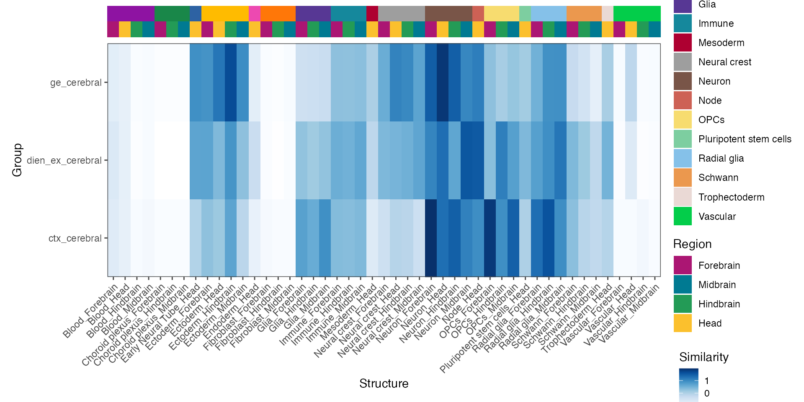

other_references.RmdYou might want to compare your data also to human data instead of the mouse brain. Unfortunately, quantified and registered transcriptomic maps are not yet available for the developing human brain at this scale. However, we can compare cells to RNA-seq data of microdissected human brain regions from BrainSpan. The data is directly downloaded with VoxHunt.
## [1] "matrix" "row_meta" "col_meta"Before we compute similarities, we do some feature selection on to obtain a set of marker genes. In the future we will also implement the functionality to do this on the BrainSpan data. You could either do this youself or do feature selection on the ISH data, which we have found to work well.
regional_markers <- structure_markers('E13') %>%
group_by(group) %>%
top_n(10, auc) %>%
{unique(.$gene)}Using these features, we can now construct a similarity map to stages pcw 10 - pcw 24. We also use the argument pseudobulk_groups to summarize the single cell data before calculating the correlation. This makes everything much faster and usually yields very similary results as mapping each cell individually.
ref_map <- brainspan_map(
example_seurat,
stages = 10:24,
group_name = 'cluster',
genes_use = regional_markers,
pseudobulk_groups = T
)
print(ref_map)## A BrainSpanMap object
## 3 cells mapped to
## 185 reference samples
## based on 179 featuresAnd plot the similarity to the individual samples in brainspan categorized into structure groups:
plot_map(ref_map)We can again observe the patterns we’ve seen when mapping to ISH data: Cortical neurons are highly correlated with the neocortex (NCx), diencephalic neurons with the dorsal thalamus (DTH) and GE neurons with the ganglionic eminences (GE) and the amygdala (AMY).
You can also plot the similarities summarized to structures, rather than for each individual sample.
plot_structure_similarity(ref_map, annotation_level = 'structure_name', scale = F)The recently released scRNA-seq atlas of the developing mouse brain (La Manno & Siletti et al.) provides a further great ressource for evaluating cell identity. The data from the preprint can be obtained here. If after you downloaded both loom files to a directory, you can load it to be used by VoxHunt:
load_mousebrain_data('~/path/to/data')After this, mapping your single cell data is as easy as calling
mb_map <- mousebrain_map(example_seurat, group_name = 'cluster', genes_use = regional_markers)
print(mb_map)## A MousebrainMap object
## 2300 cells mapped to
## 942 reference clusters
## based on 176 featuresAs with other maps, you can plot the object with
plot_map(mb_map, downsample=50000, point_size=0.1)and plot the similarity to different cell types with:
plot_structure_similarity(mb_map, cluster = F)
For annotations of these maps, please have a look at the beautiful Figure 1 of the preprint.
Note 1: In this case, we only compute the similarity to aggregated clusters of the data, as correlation to >300.000 cells is computationally quite intense. Further, the plotting function plot_map() takes an argument subsample, which allows downsampling the cells for faster plotting.
Note 2: The mapping functionality to this dataset is still pretty basic, considering how rich it is. This is partially because the publically available annotations are still quite coarse. We are working on this and will integrate it better in the future.